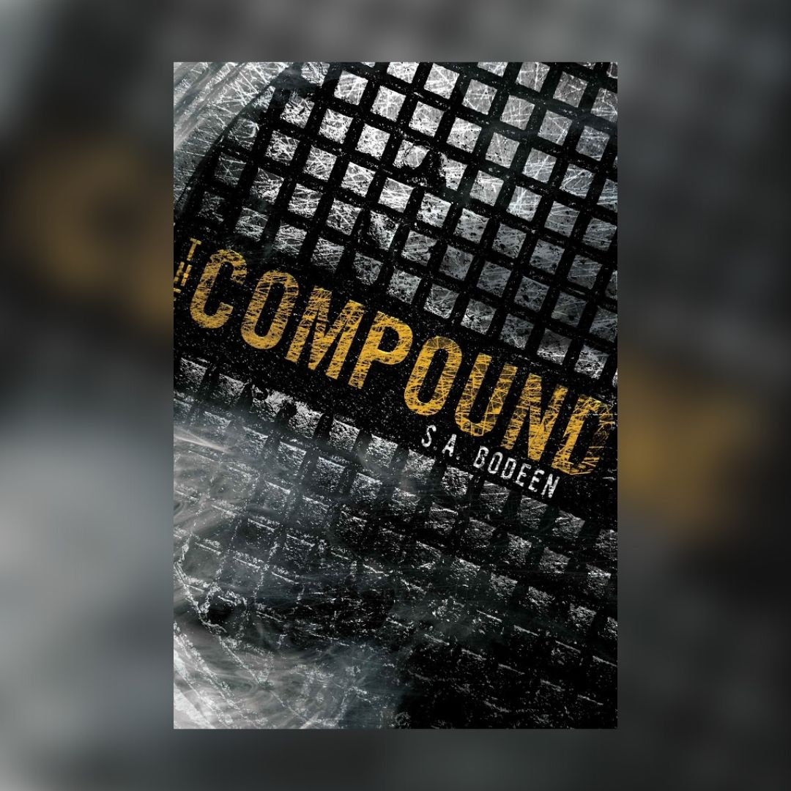

I did just about every sport you can noramally think of until I was at least 12. I went to state 2 years in a row for the 100 butterfly during swim in Missouri. I had to wait in the hospital waiting room for 3+ hours with a hole the size of a quarter in my chin and thats where the scar comes from. I also recently just built a new PC that has a 4090 in it.
I like this book because it tells a very interesting story of how a man was able to trick his family into thinking the apocolypse was happening and getting them to go into an underground bunker for years. In there, they slowly start to go mad realising things aren't what they seem. It is a really interesting concept and made me want to read more.
